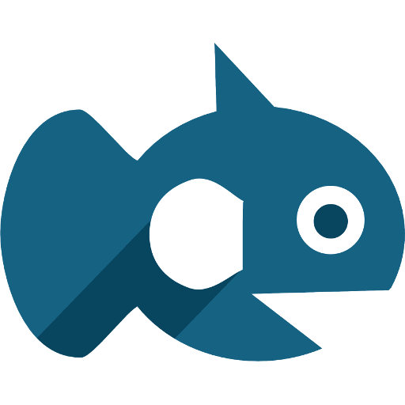
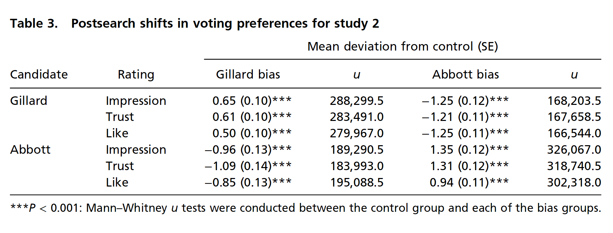
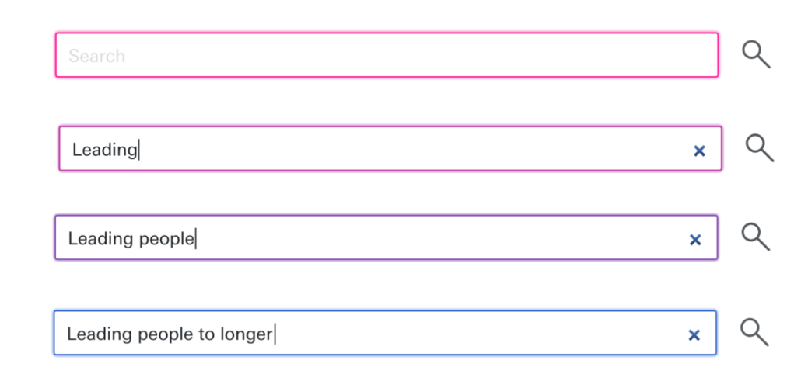
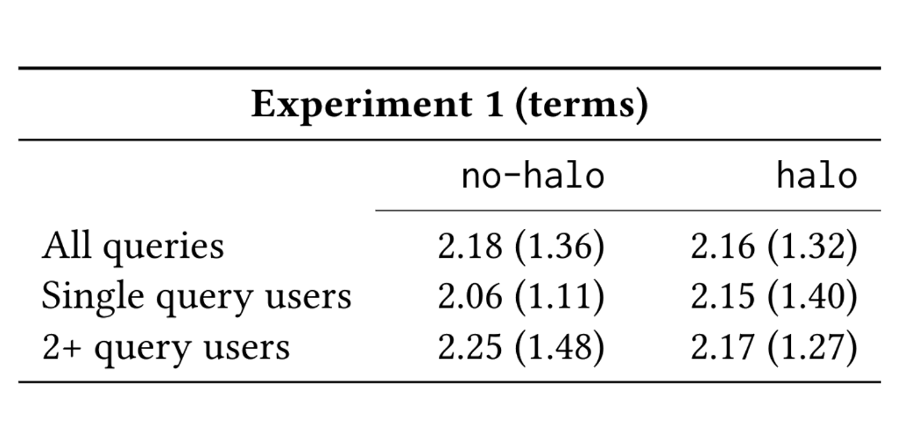
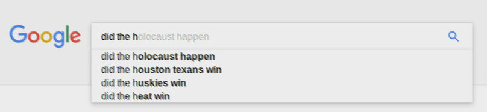
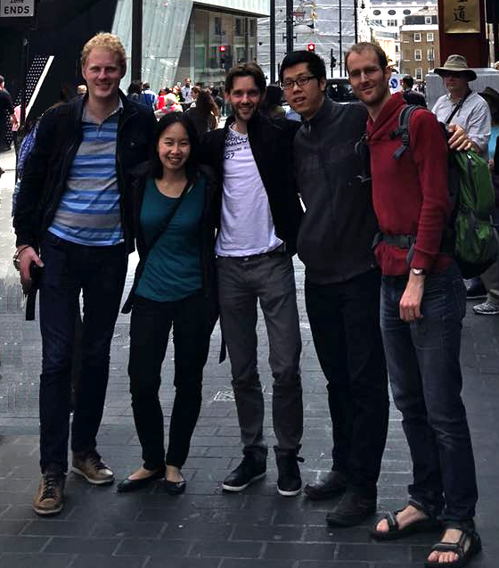
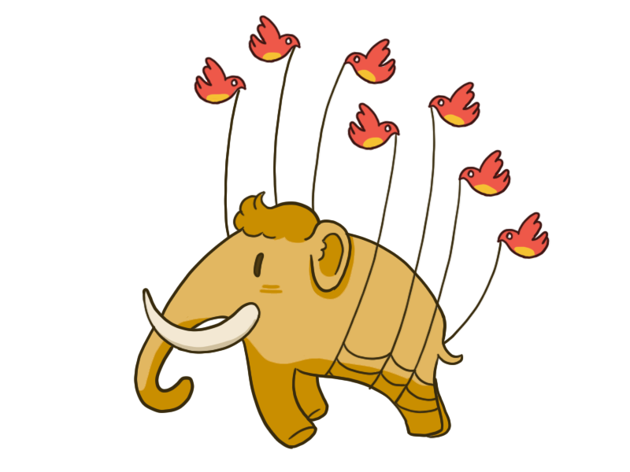

Searsia 
Bringing search to the fediverse
Inter-Actief Lunch Meeting, 30 May 2017
Web search?
1. Influences people ...
- 
- Robert Epstein and Ronald Robertson. The search engine manipulation effect (SEME) and its possible impact on the outcomes of elections. Proceedings of the National Academy of Sciences of the USA 112(33), 2014.
2. Invades privacy ...

- By Adam Zyglis. http://adamzyglis.com/
3. Is expensive ...
Our approach...
Federated search
Demo!
https://search.utwente.nl
A/B-testing a hypothesis
-
We created an interface designed to encourage people to type longer queries (...) Our interface design creates a halo around the query text box that varies in color and size with the length of the query being constructed (...) Results suggest that our interface manipulation may be effective for eliciting longer queries.
- Elena Agapie, Gene Golovchinsky, and Pernilla Qvarfordt. 2013. Leading people to longer queries. In Proceedings of SIGCHI'13 Conference on Computer–Human Interaction, 3019–3022
The Query Halo Effect
- 
The Query Halo Effect at UT Search
- 
- Djoerd Hiemstra, Claudia Hauff, Leif Azzopardi. Exploring the Query Halo Effect in Site Search: Leading People to Longer Queries, In: Proceedings of the 40th ACM SIGIR Conference on Research and Development in Information Retrieval, 2017
Query autocompletion considered harmful
- 
- Lawsuit France: "cnfdi arnaque"
- Lawsuit Italy: "[name] truffatore"
- Lawsuit Germany: "bettina wulff prostitute"
- ... etc.
- "Michele Obama is a man" ??
Autocompletion Stereotypes
-
Google can produce suggested terms which could be viewed as racist, sexist or homophobic (...) 2690 questions were elicited and then categorised according to the qualities they referenced (...) Gay and black identities appeared to attract higher numbers of questions that were negatively stereotyping
- P. Baker and A. Potts (2013). Why do White people have thin lips? Google and the perpetuation of stereotypes via auto-complete search forms. Critical Discourse Studies 10(2), 187–204.
Query autocompletions without tracking
Experiment:
Autocompletions from user data
query log by Pass et al. (2006)Autocompletions from web content
anchor texts from the ClueWeb09 web crawl
G. Pass, A. Chowdhury and C. Torgeson (2006) A Picture of Search. In:
Proceedings of the 1st international conference on Scalable information systems (InfoScale), 1-7
Query autocompletions without tracking
NEXT: Search advertisements without tracking
-
It is a myth that search engines need to track you to make money on Web search. When you type in a search, we can show an ad just based on that search term. For example, if you type in, "car" we show a car ad. That doesn't involve tracking because it is based on the keyword and not the person.
- DuckDuckGo Advertising and Affiliates
Conclusion
-
Distribution of responsibilities:
More objective — harder to manipulate or censor. -
Queries via broker:
More private — Search engines cannot track individuals. -
No web crawling:
Cheaper — easy to maintain. -
A/B testing:
"Industrial" research for academics! -
Recommendations without tracking:
Query suggestions and ads based on content, not on user data.
People
- 
- Dolf Trieschnigg, Dong Nguyen, Djoerd Hiemstra, Ke Zhou, Thomas Demeester
(Almer Tigelaar, Rob Stortelder)
Check it out!
- http://searsia.org (documentation)
- https://search.utwente.nl (example deployment)
- https://github.com/searsia (source code)
Acknowledgments
Want to develop the fediverse, but don't like search?
- 
- Help set up: mastodon.utwente.nl
Thanks
/